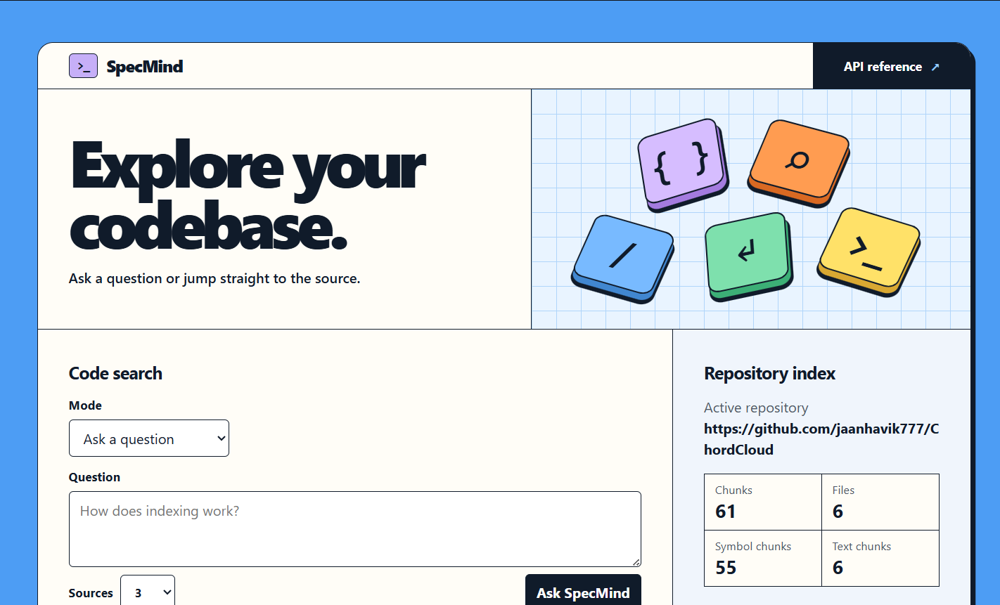

TracePredict
Track incidents, group related alerts, and predict how serious they might be.
View case study for TracePredictTracePredict
Incident intelligence and security operations
Service impact
Session storeAuth serviceCustomer portal
Backend systems, applied AI, and security operations.
Track incidents, group related alerts, and predict how serious they might be.
View case study for TracePredictIncident intelligence and security operations

 here's your playlist link!
here's your playlist link!Turn a CSV into a shareable analysis.
Convert your CSV to a beautiful PDF report instantly
A shared workspace for study groups.
A Virtual Study Group Platform